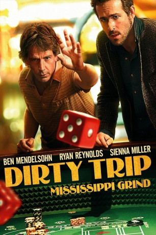

#7484 Dirty Trip
Alternativ: Mississippi Grind
 
 IMDB-Wertung: 6.3 / 10
IMDB-Wertung: 6.3 / 10  Metascore: 0
Metascore: 0 
Curtis ist in seinen 30ern und liebt es, seine Zeit in Casinos zu verbringen. Eines Tages lernt an einem Pokertisch den unglücklichen 44-jährigen Gerry kennen. Es dauert nicht lange, bis die beiden sich über Alkohol und Karten anfreunden und nach und nach ihre Lebensgeschichte offenbaren. Wenn Gerry sich nicht durch seinen Job als Immobilienmakler quält, verliert er Unmengen beim Glücksspiel. Sein teures Hobby ruft auch bald einen gefährlichen Kredithai auf den Plan. Und auch seine Ehe und die Beziehung zu seiner Tochter hat ihn seine Spielsucht gekostet. Curtis hingegen scheint keine emotionalen Lasten zu tragen und löst durch sein dynamisches, freigeistiges Auftreten in Gerry etwas aus. Allmählich verändert sich seine eigene Einstellung zum Leben.
Jahr: 2015
Dauer: 108 Minuten
FSK: 12
Land: USA Studio: A24Tonspuren: DTS - ,
Untertitel: Deutsch,
Auflösung: 1080p (1920x808) Größe: 8888 MB
Genre: Drama, Komödie
Regisseur: Anna Boden, Ryan Fleck
Drehbuch: Anna Boden
Soundtrack:
Darsteller:
 Ben Mendelsohn als Gerry
Ben Mendelsohn als Gerry Yvonne Landry als Louise
Yvonne Landry als Louise Ryan Reynolds als Curtis
Ryan Reynolds als Curtis Jayson Warner Smith als Clifford
Jayson Warner Smith als Clifford Kerry Cahill als Riverboat Waitress
Kerry Cahill als Riverboat Waitress Jane McNeill als 'Bloody Mary' Kate
Jane McNeill als 'Bloody Mary' Kate P.J. Marshall als Dale
P.J. Marshall als Dale Stephanie Honoré als Denise
Stephanie Honoré als Denise Teri Wyble als Home Buying Wife
Teri Wyble als Home Buying Wife Hunter Burke als Home Buying Husband
Hunter Burke als Home Buying Husband Randy Austin als Big Winner
Randy Austin als Big Winner Jared Bankens als Skinny Thug
Jared Bankens als Skinny Thug Alfre Woodard als Sam
Alfre Woodard als Sam- Joshua Powell als Waiter
 Sienna Miller als Simone
Sienna Miller als Simone Analeigh Tipton als Vanessa
Analeigh Tipton als Vanessa- Susan McPhail als Donna
 Samantha Beaulieu als Curvy Woman
Samantha Beaulieu als Curvy Woman Jason Davis als Dennis
Jason Davis als Dennis Lucky Johnson als Man in Bar
Lucky Johnson als Man in Bar Robin Weigert als Dorothy
Robin Weigert als Dorothy- Indigo als Dora
- Jamal Dennis als Baller
- James Toback als Tony Roundtree
 Thomas Francis Murphy als Pete
Thomas Francis Murphy als Pete- Marshall Chapman als Cherry
 Lauren Gros als Alice
Lauren Gros als Alice- Aaron J. Brooks als Dog Track Patron , uncredited
- David E. Brown als Casino Pit Boss , uncredited
- Kimberly P. Coburn als Gambler , uncredited
 Ross P. Cook als Pool Hall Patron , uncredited
Ross P. Cook als Pool Hall Patron , uncredited- Tyler Cook als Will , uncredited
- Travis Dunn als Poker dealer , uncredited
 Oscar Gale als Poker Player #1 , uncredited
Oscar Gale als Poker Player #1 , uncredited- David Scott Gaudin als High Roller , uncredited
 Christopher Heskey als Poker Dealer , uncredited
Christopher Heskey als Poker Dealer , uncredited Justin Lebrun als Pitboss , uncredited
Justin Lebrun als Pitboss , uncredited- Kristen Merritt als Naked Lady , uncredited
- Travis michael Myers als Frat Boy , uncredited
- Alfonzo Walker als Security Guard , uncredited
- Christina Michelle Williams als Gambling Patron , uncredited
- Anthony Howard als Larry
- Jason Shaffette als Chuck Poker Dealer
- Timothy Louie als Dealer
- Poland Perkins als Older Gentleman
- Don Brady als Loser
- Jay Cooper als Dennis' Dealer
- Joshua Wilcox als Player One
- Leo Bud Welch als Leo Welch
- Shamarr Allen als Local Bar Patron
Datei: X:\2015(A-F)\Dirty Trip (2015, FSK12, 1920x808).mkv seit 15.11.2017
Festplatte: HD 2015(A-Z)
 Es gibt insgesamt 143 Filme in der Gruppe '2015(A-F)'
Es gibt insgesamt 143 Filme in der Gruppe '2015(A-F)'